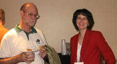
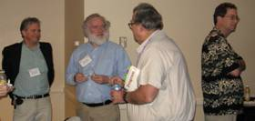
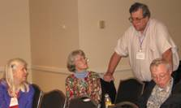
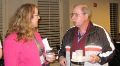
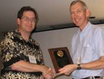

Mathematical Association of
SIGMAA Stat-Ed News

Mathematical Association of
January,
2007
Contents:
News from MathFest,
News from the Joint Math
Meetings,
New Newsletter Editor Needed!
Other News
Upcoming Events
MathFest,
A panel entitled “Enhancing the Teaching of Advanced
Placement Statistics” was held on August 11 at the MAA MathFest in
Calvin, a
member of the AP Statistics Development Committee, addressed what was learned
from this year’s AP Statistics exam. He provided the audience with a history of
the exam and the scores as well as a comparison with AP Calculus. He then
focused on areas in which students demonstrated a weakness in their
understanding. The two primary areas in need of improvement are sampling
& design and inference. He asked AP teachers to influence their
students to read the question carefully and only answer what is
asked.
Corey, an AP
Statistics teacher, provided a demonstration of FATHOM software and how it can
be used in teaching this course. He used FATHOM to view one-variable data as
well as bivariate data. Using the “slider’ he showed how the software
could help students answer “what if” type questions. Corey also
demonstrated how to run simulations and sample data. The time was limited
but the audience had a chance to see the use of FATHOM in a number of different
course
topics.
Murray, an
AP Statistics teacher, spoke about projects. Members of the audience
received copies of instructions for the four projects that
Approximately
twenty-five AP Statistics teachers and university faculty attended the one hour
and twenty minute panel.
SIGMAA Stat-Ed Business
Meeting
The business meeting was held Saturday evening, January 6. We began with a refreshment period.

George Cobb, Robin Lock, John McKenzie, Bob Hollister and Ginger Holmes-Rowell
and Allan Rossman socializing

Leigh Lunsford
and
Don Bentley
Officers present were introduced:
Chair:
Ginger Holmes-Rowell, Middle Tennessee State Univ., rowell@mtsu.edu
Past-Chair Tom Moore,
Treasurer:
Unable to attend
were Chair-elect Chris Lacke,
Tom Moore announced
that Pat Humphrey,
The 2006 Dex
Whittinghill Best Contributed Presentation award was presented to Allan Rossman
for “Examples of Assessments to Improve Student Learning in Introductory
Statistics” (coauthored with Beth Chance).

Murray Siegel
presented the Treasurer’s report and a recap of the SIGMAA-sponsored panel at
MathFest (see above). He announced
that we would be sponsoring a contributed paper session for MathFest
2007.
The group split into
small groups to discuss such items as the SIGMAA webpage, what the SIGMAA should
sponsor, Awards, connections with K-12.
Recommendations from the small groups will be distributed with the
meeting minutes by Secretary Sue Schou.
SIGMAA Stat-Ed Panel
Session
“Preparing
Majors for the nonacademic workforce: Projects and internships in applied
mathematics and statistics.”
Panelists were: Sylvia Bozeman (
Ninety percent of math majors go to the workforce rather than to advanced degrees and academia. They need to have some background (via projects or internships) to prepare for a nonacademic career. The three panelists presented information on summer institutes and REU programs, as well as interim-term practicum courses.
Spelman has three different summer programs with different focuses. The first is the Spelman Environmental Statistics Summer Institute (NSF-funded and joint with NC State) in which students do real data analysis on projects for agencies such as the Georgia Department of Natural Resources. The sponsoring agencies provide professionals as consultants. Students learn SPSS, SAS, act as consultants and develop technical writing and presentation skills, as well as collaboration. Spelman has two other REU programs: one on cryptographic mathematics and one on climate modeling. Both involve learning new mathematics, and applying their knowledge to concrete situations as well as making presentations.
Worcester Polytechnic has been conducting “Industrial Strength Math” as an NSF REU with their Center for Industrial Mathematics and Statistics since 1998. It aims to develop skills commonly lacking such as communication and teamwork. Their intent is that students work on real world significant problems with real world constraints. Students here also do formal presentations and write reports at the end for the project sponsor.
SIGMAA Stat-Ed Contributed Papers
The Contributed Paper session was held Sunday afternoon, January 7. Ginger Holmes-Rowell moderated. There were ten presentations.
“Statistics Before Your Eyes: Photographs of Statistical
Concepts,” Robert Jernigan,
He presented a slide show of pictures that demonstrate properties of statistical graphics: living histograms of people arranged by height, water dripping from downspouts, paint wear on a gas station pump (from people taking their receipts) door wear patterns etc that all semonstrate bell-shaped distributions. His pictures can be found at www.statpics.com.
“”Sampling + Simulation = Statistical Understanding Graphical Simulations in Excel for Introductory Statistics,” Sheldon P Gordon, Farmingdale State University of New York (gordonsp@farmingdale.edu) and Florence Gordon, New York Institute of Technology (retired) (fgordon@nyit.edu).
He presented some ways to use sliders in Excel for simulations: the chaos of small numbers (showing that patterns for large n don’t exist for small n – binomial setting), the Law of Large Numbers (binomial setting), the Central Limit Theorem (for four underlying population types: Normal, Uniform, U-shaped and skewed), Confidence Intervals (recreated graphs seen in many texts on how they behave), and regression. These are available for download from the Math Department page under farmingdale.edu for by email from him at the address above.
“What is R2? Using Dynamic Graphs to Illustrate
Ideas in Regression,” Robin Lock,
Using Fathom, we can create graphical displays that are good (by using lots of graphs in teaching statistics), better (by using graphs that “move), and best (using graphs where students can control the motion). An example was shown with regression in Fathom where the “squares” are displayed; a student can pull the regression line and see how the squares change. We can also visually see how a linear relationship (in height vs weight) is better than just using the mean as the best predictor of weight by again looking at the squared contribution of each data value. Fathom can also show the contribution simulations and display the relationship between coefficients for multicollinear variables.
“Using Boxplots and Histograms to Draw Inferences,” Kris
Green,
Many of his assignments are given in the form of a memo from management. Students look at the information and make recommendations. For example, they are given a psychological profile of two fictitious managers (one cautious and one a “go-getter”) and boxplots of salary distributions at four companies – based on the profile, which might be the best company for each to work for? Rating service at a fast food restaurant – the critical variable is narrowed down to service time. His conclusions were that using simple tools in parallel (such as boxplots) is good. Having the students make assumptions deepens reflection and thinking; making comparisons pushes students to demonstrate; and deeper thinking helps students make judgements.
“Using Dynamic, Interactive Models to Teach Statistical Concepts,” Michael Marsh, Shippensburg University of Pennsylvania (mtmars@ship.edu)
This was another example of using Excel. He demonstrated his confidence interval macro and an a, ß error probability demo. He also discussed his “STATU” data set where he has generated 960 realistic student profiles based on family income, SAT, High school GPA, number of siblings, number of hours studied per week, binge drinking, etc and how these students have been assigned to four different dorms. He uses this data set for many things. If anyone wants the data set, email him at the address above. (PS – he also said the learning curve with the new version of Excel is STEEP!)
“Graphical Methods for Teaching and Assessing the IID Assumption,” Mark Inlow, Rose-Hulman Institute of Technology (inlow@rose-hulman.edu)
This required time-ordered data. A run chart is created and examined – if the data are independent, the chart will exhibit “roughness;” if identically distributed, the chard will exhibit no systematic patterns and have a stationary distribution. A chart made from the daily low temperature from January to July does not exhibit the desired properties: it’s too smooth and shows an increasing trend with decreasing variability. He then showed a Random OPrder Run Chart (RORC) where the time-ordered data are randomly reordered. If they are truly IID, the random chart will be “similar” to the original chart. He also showed how one can clump groups of observations and create boxplots for each group – another way to assess the identically distributed assumption. Lag plots (plot data pairs (xi, xi+1) for example) can also be used to create bivariate plots to look for correlations (another check of independence).
“Creating Graphs for Better Analyses, Explanations, and
Presentations,” John McKenzie,
John examined the various types of graphs available in Excel, Minitab and SPSS (not all graph types are available in any one package) categorized by the number and type of variables in the graph. We saw that Excel can create some really bad graphs using raw data (most graphs in Excel are based on summarized data). SPSS has a new capability to create multiple dotplots using a categorical variable (useful in ANOVA, for example). Minitab has a new capability for “scatterplots” with a categorical explanatory variable – medians for each category can be connected; it also has a new capability to show a boxplot for each marginal distribution on an
(x, y) scatterplot – useful in seeing outliers in regression. Minitab also has a new capability to “jitter” points in a graph to show the number of overlapping data points. John also showed how different graphs of the same data can make interesting test/quiz questions.
“Graphing Data Badly, or Things I
Swear my Statistics Teacher Never Told Me!” Patricia
This presentation focused on how bad graphics can distort the true picture (with no “real” zero, or area principle violations for example), non-round “pie charts,” angled bar charts, etc. Examples from students that violate good principles were also displayed (categorical axes on histograms, individual “bars” on a histogram – more Excel influence, creating side-by-side boxplots for a regression problem). Sometimes texts are misleading – especially those that instruct students to create a graph for a set of data on one level (a boxplot, say) might look reasonable for a t-interval for the mean, but a histogram shows a bimodal distribution loaded at the ends – a CI for the mean is most likely not a good analysis. She also described how she has adapted the Rossman/Chance activity on the Gettysburg address to have students select a sample of their “favorite” words, and a sample of “random” words – the two calculated means are collected for each student and graphed as a connected scatterplot – when the true mean is added, students can visually see the power of random sampling. Their random samples are revisited later when introducing confidence intervals – we can clearly see how the intervals do or do not contain the mean.
“Examples of Misdisplaying Statistical Graphs in Presentatations,” Jialing Dai, University of the Pacific (jdai@pacific.edu)
According to Howard Wainer, the criteria for a good graph are showing the data (efficiency) accurately (precision) clearly (clarity.) She then displayed several examples from his book that violate these principles through double y-axes, hiding the data in the scale, showing the data incorrectly (big lie factor – the ratio of the effect shown in the graph to the effect shown in the data) and graphs of incomplete data or data taken out of context (a graph showing a drop in crime – for only two years’ worth of data.)
“Graphs: Different Faces of Data,” Madhuri Mulekar,
Graphs are useful summary measures that help teach, can help make decisions, etc. However, students often treat all graphs alike and assume each provides the same information. We looked at several different types of graphs for distributions and find that some are better than others for determining the mean (or median), the standard deviation is difficult to determine from any graph, but range and IQR are easy. The same can be said for looking for trends or patterns – different graph types show different “faces!”
Statistical Major Presentations
This year there were two statistically oriented major presentations!
“Baseball,
Shakespeare, and Modern Statistical Theory,” Bradley Efron,
Dr. Efron is the inventor of the bootstrap. He began with the question “What is
Statistics”? His answer is that
is is the Mathematical Theory of Learning from Experience, especially experience
that arrives a little bit at a time (as in baseball at bats, cancer patients
survival, etc). Statistics was the first information science. He presented the case of the Puzzled
Physicist who according to the ultrasound was going to have twin boys. The doctor tells him that the
proportion of twins that are identical is 1/3. The Physicist wants to know the
probability that his twins will be identical. This was solved using Bayes Rule. (The answer is ½.) He described the problem of Corbet’s
Butterflies. Corbet had trapped
butterflies in Maylaysia for two years and wanted to know how many more new
species might he expect to see if he stayed to trap
another year. That was solved by
Empirical Bayes and the “Magic Formula.”
We then saw the case of Shakespeare’s missing words (the really bad poem
found at Bodleian Library at
“Statistics for Smart People
who don’t Know Anything about Statistics,” Persi Diaconis,
No, he didn’t juggle or do card tricks. This was essentially a math stat
talk. He began by making the
statement that there are still close connections between statistics and
mathematics. Fact 1: You can’t talk
about Statistics without talking about Probability. For example, the question “How high, h,
must we build a dam so the chance the water level is = h for the next 100 years
is .99?” (This got some chuckles in
Other Stat-Ed related
presentations
There are always statistically-related presentations in sessions other than that sponsored by the SIGMAA. I have listed some of those below, with contact information for the presenter, if the topic looks interesting. I also include the abstract number, which can be used with the AMS meeting site for a fuller abstract.
“Results of the 2005 AP Statistics Curriculum Survey,” Tim Jacobbe, (1023-z1-47), tjacobbe@ets.org
“Interactive workbooks for classifying Distributions and Balancing Chemical Equations,”Sarah Mabrouk (1023-m5-1856), smabrouk@frc.mass.edu
“Implementing problem-based Learning in Introductory Statistics Courses (Preliminary Report),” Catherine Matos (1023-I1-1780), catherinematos@clayton.edu
“Using Reading Questions in an Introductory Statistics Course to Enhance Understanding of Concepts (Preliminary Report),” Edwin Herman, (1023-R5-599), ehreman@uwsp.edu
“A Second Course in Biostatistics at a
“Engaging Students in Quantitative Reasoning: Activities, Real Data, and Relevant Issues.” Kay Somers, (1023-G5-678), mekbs01@moravian.edu
“The Birthday Problem: The Making of a Classic.” Dale Hathaway (1023-z1-256), Hathaway@olivet.edu
“Statistics to Detect Danger Underground,” George Heine, (1023-L1-1902)
“Assessing Student Attitudes on the Value of Introductory Statistics,” Milo Schield (1023-D5-76), milo@pro-ns-net
“Data Exploration and Modeling in a College Algebra Course: Use of Heart Rate Data to Investigate Recovery Time of Athletes,” Erica Young, (1023-F1-1718), Erica.young@usma.edu
New Newsletter Editor Needed!
Pat Humphrey has been the newsletter editor/writer since the inception of the SIGMAA. She, however, has been elected to be Chair-elect of the SIGMAA. In view of this, we seek a new individual to take on this office.
In the past, I have tried to solicit input from others, with varying degrees of success. For the past several years, I have taken notes of presentations at the JMM (since that’s where our major focus is), and written them up into this newsletter; my thinking being that since many of our members are unable to attend the meeting, this will give them a “flavor” of what happened. However, the job can be what that individual makes it.
Any interested individuals should contact Pat Humphrey (phumphre@georgiasouthern.edu) or another SIGMAA officer (see the list on page 1).
Other News
The following are from Allan Rossman (arossman@calpoly.edu):
Upcoming Events – Mark Your Calendars!
USCOTS (US Conference on Teaching Statistics) sponsored by
the Consortium for the Advancement of Undergraduate Statistics Education
(CAUSE). The
Joint Statistical Meetings,
MathFest, August 3-5, 2007,
Joint Mathematics Meetings,